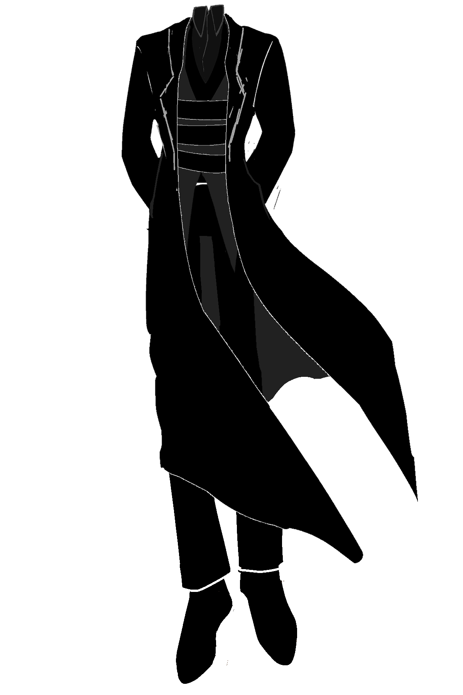

Mekanizm
年齢：250以上
体格：197cm
役職：魔王城管理兼魔王護衛
好き: メカ、部下 嫌い: 生もの
有利属性:
不利属性:
体格：197cm
役職：魔王城管理兼魔王護衛
好き: メカ、部下 嫌い: 生もの
頭のない外見の大柄な人型の魔族。
仕事とメカと部下が好きな、温厚な性格の持ち主。
自分に厳しく、他者にべた甘である。
現場に出て作業するのが好きなため、休日には外に出ている。
部下に飲みに誘われれば、わざわざ時間を空けていくなど、結構ノリがいいのかもしれない。
ただ、MZ:Typesには妙に冷たい部分があったり、壁を感じる事がある。
魂に関する能力を持ち、それによって己の魂の転写、翻訳を繰り返すことにより
MZ:Typesを作り上げた。
現在これらの能力は、MZ:Typesの量産のため隔離しているため使用できない。
MZ:Typesには、少数ながらお気に入りがおり、適度に気にかけている。
つもりだが、本人たちには結構距離を置かれている。